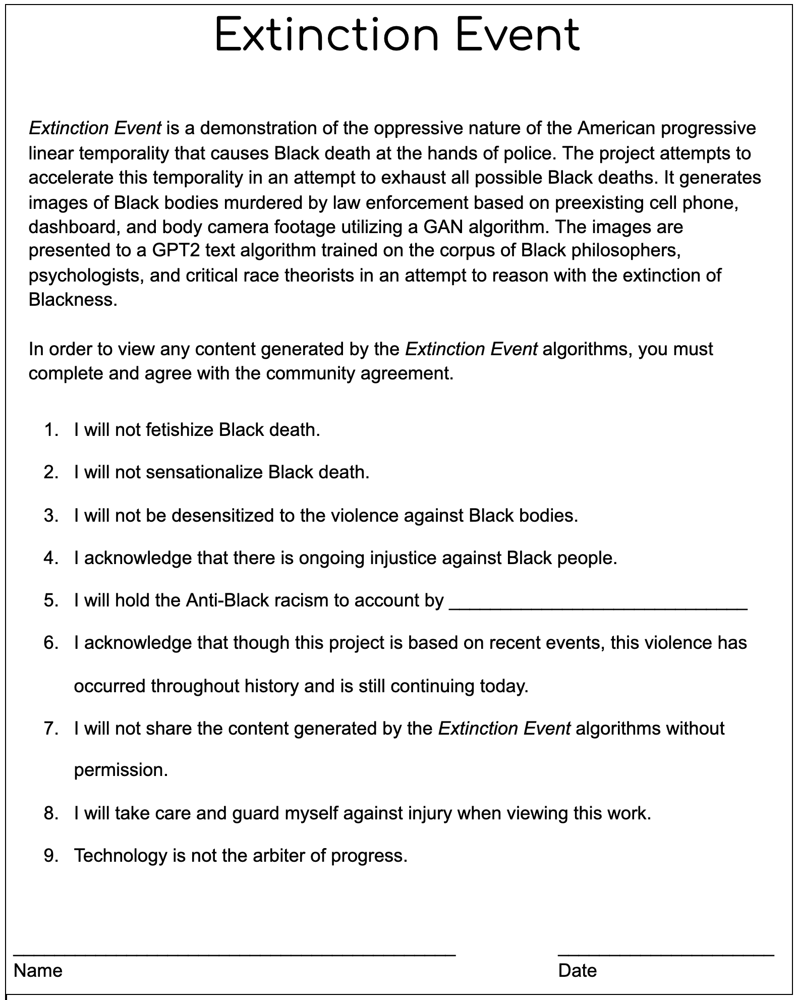

Machine Learning | Data Visualization
I was part of a research group, Extinction Event, for ayodamola tanimowo okunseinde. Extinction Event is a series of experiments that deconstructs the linear temporal narrative that oppresses Black bodies and uses technology to reimagine Black temporalities.
Extinction Event computatinally generates images of Black death at the hands of police using a generative adverserial network model and presents them with algorithmically created (Natural Language Processing) text based on Black novelists, philosophers, and critical race theorists. I helped gather image data and conduct qualitative research related to police violence against Black people in the United States and tested different natural language processing models (GPT2-simple, textgenrnn) and generative adversarial networks (DCGAN, StyleGAN) to create text and images in service of a larger art installation.
The research also included creating a database of incidents of Black death at the hands of police that included date and location information, as well as media images and footage.
Trigger Warning: the content includes police brutality and violence against Black people. Please proceed with caution and read the below thoroughly.

EXTINCTION EVENT DATABASE

EXTINCTION EVENT DCGAN GENERATED IMAGES GRID

EXTINCTION EVENT STYLEGAN GENERATED IMAGES

EXTINCTION EVENT STYLEGAN GENERATED IMAGES

EXTINCTION EVENT STYLEGAN GENERATED IMAGES

EXTINCTION EVENT GPT2-SIMPLE GENERATED TEXT
EXTINCTION EVENT GPT2-SIMPLE GENERATED TEXT
EXTINCTION EVENT GPT2-SIMPLE GENERATED TEXT
This project was created in collaboration with ayodamola tanimowo okunseinde, Mary Ann Badavi, Jeffrey Geiringer, and Nicole Lloyd